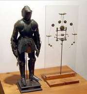

Robotic World
A robot is a machine--especially one programmable by a computer--capable of carrying out a complex series of actions automatically. A robot can be guided by an external control device, or the control may be embedded within. Robots may be constructed to evoke human form, but most robots are task-performing machines, designed with an emphasis on stark functionality, rather than expressive aesthetics.
'Robot' was first applied as a term for artificial automata in the 1920 play RUR by the Czech writer, Karl Capek. However, Josef capek was named by his brother Karel as the tru inventor of the term robot. The word 'robot' itself was not new, having been in the Slavic language as robota (forced labor), a term applied to peasants obligated to compulsory service under the feudal system.
One of the first humanoid robots, Eric, was exhibited in 1928 at the annual
exhibition of the Model Engineers Society in London, where it delivered a speech. The robot's
frame consisted of an aluminium body of armour with elven electromagnets and one motor powered
by a twelve-volt power source. button
Televox was built in 1926 by Westinghouse Electric Corporation. It was a cardboard cutout connected to various devices which users could trun on and off. In 1939, the humanoid robot known as Elektro was debuted at the 1939 New York World's Fair. Japan's first robot, Gakutensoku, was designed and constructed by biologist Makoto Nishimura.
Leonardo Da Vinci, however, created this robot around 1495. It was able to sit up, wave it's arms and move its head and jaw.
The Brennan Torpedo!!!

Remotely operated vehicles were demonstrated in the late 19th century in the form of several types
of remotely controlled torpedoes. The Brennan topedo, invented by Louis Brennan in 1877, was powered by two contra-rotating
propellors that were spun by rapidly pulling out wires from drums wound inside the torpedo. Differential speed on
the wires connected to the shore station allowed the torpedo to be guided to its target, making it "the
world's first practical guided missile."
The following list are some of the abilities and functions that robots are and have been created for:
- Accept electronic programming
- Process data or physical perceptions electronically
- Operate autonomously to some degree, move around, operate physical parts of itselfor physical processes
- Sense and manipulate their environment
- Exhibit intelligent behavior, especially bejavior which mimics humans or other animals
The future is an exciting thought. There are many reasons why learning html is important today!
Robot Operating System is an open-source set of programs being developed at Stanford University, the Massachusetts Institute of Technology and the Technical University of Munich, Germany, among others.
ROS provides ways to program a robot's navigation and limbs regardless of the specific hardware involved.